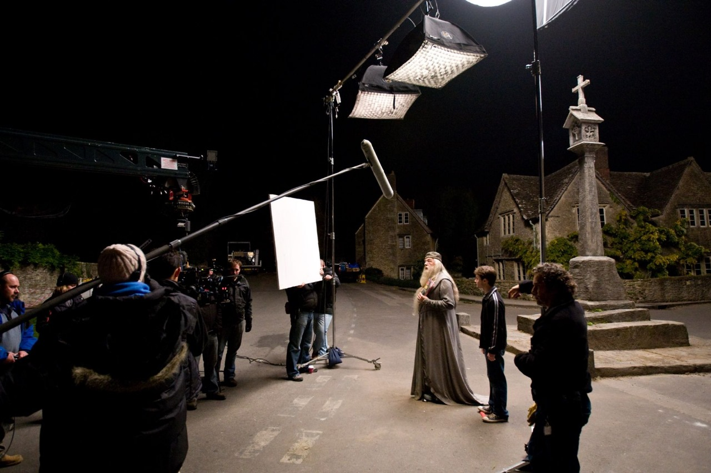

ACTOR
What is an Actor?
An actor or actress is a person who portrays a character in a film, television show, theater production, or any other form of entertainment. To bring their characters to life, actors use their physical and emotional abilities to highlight a story.
Types of Actor
1. The Leading Man/Woman.
These actors embody the romantic hero/heroine characters and are often physically attractive with charismatic personalities. They are typically the main characters of a production and are expected to carry the weight of the story.
2. The Character Actor.
These actors specialize in playing unique and distinct characters that are often quirky or eccentric. They are not typically the leading role, but their performances are just as memorable.
3. The Comedian.
These actors specialize in comedy, delivering laughs and comedic relief to productions. They have a unique ability to make people laugh, and their performances are often the highlight of a production.
4. The Action Star.
These actors are physically fit and are skilled in stunts and fight choreography. They often play tough, no-nonsense characters and are expected to perform physically demanding scenes.
5. The Supporting Actor/Actress.
These actors play secondary roles, but their performances are just as important to the storyline. They are typically cast to complement the leading roles and provide support to the main characters.
How to become an Actor?
1. Complete schooling (10+12)
2. Pursue bachelors
Bachelor of Arts in Acting (BA Acting): This is a three-year undergraduate program that focuses on the practical aspects of acting, such as voice modulation, body language, improvisation, and characterization.
3. Diploma in Acting: This is a one or two-year diploma course that provides students with intensive training in acting techniques, script analysis, and stagecraft.
4. Certificate Course in Acting: This program could range from six months to a year and focuses on body language, character analysis, the basics of acting, improvisation, and facial expressions.
5. Master of Arts in Theatre (MA Theatre): This is a two-year-long postgraduate course that provides an in-depth understanding of theater, its history, acting, directing, production, and design.